Sim-robot-learning · 归档于 2026-11-15
FlashALOHA
Flash ALOHA: Learning Fast and Precise Manipulation
PDF Project pageCode Hardware ALOHA Lightning (IEEE)
归档到 Robot learning in simulation：双臂操作的 imitation learning（数据采集 + 策略）；全是真机，没有仿真。
TL;DR
- Problem
- 示范学出来的策略比人慢得多：现有接口采不到又快又准的示范，动作一快 action chunk 的接缝还会让机器人失稳。
- Idea
- 人直接握着可反驱机械臂的夹爪手柄示教，轨迹由电机 encoder 记录；图像里手的位置涂黑；相邻 chunk 的重叠处用 sigmoid 混合。
- Result
- 每个任务 50 条示范：Battery Insertion 85% / 5.70 s（puppeteering 55% / 17.87 s），Toss & Catch 80% / 1.85 s（Table III）。
Problem
慢是从数据开始的：采不到快示范，快了又不稳
Running example · 后面每个 stage 都跟着它走
Battery Insertion：桌上一个 遥控器 和一节 电池，位置沿一条 15 cm 胶带随机 → 想要：一只手把电池斜放进电池仓（不碰弹簧）并顶住弹簧，另一只手用力把它按到位；四步 Pick → Place → Prepare → Push，接近人的速度。
flowchart LR IN["例子输入
遥控器 + 电池"]:::example IN --> A1["Puppeteering
用 leader 臂遥操作
ALOHA 2"] A1 --> AX["示范本身就慢
示范 20 s
策略 55% / 17.87 s"]:::gap IN --> B1["Puppeteering 再提速
Double Freq
Skip Actions"] B1 --> BX["chunk 接缝跳变变大
15% / 12.90 s
30% / 10.30 s"]:::gap IN --> C1["Handheld 设备
visual-inertial
估末端位姿"] C1 --> CX["一快位姿就漂
0.86 m/s 时
误差约 25 mm"]:::gap IN --> D1["握臂示教，直接训 ACT
快数据，不做处理"] D1 --> DX["手在画面里；接缝处抖
No Mask 75%
No Smooth 75%"]:::gap
Handheld 一行没有 Battery Insertion 的成功率：论文只测了它的位姿误差（Fig. 2a，数值为读图）。“示范本身就慢”的原因（延迟、没有触觉反馈）出自 §I，是论文的解释，不是单独的实验。
根本问题：没有接口能又快又准地记录人的动作；有了快数据，画面里的手和 chunk 接缝又会让策略失稳。 这篇的切入点：让人直接握着机器人做任务，再用两个很轻的处理（涂黑手、混合接缝）补上这两个洞。
Related work
| 相关工作 | 解决什么 | 怎么解决 | 和本文的区别 |
|---|---|---|---|
| 同一问题 · 别的解法 | |||
| Leader-follower puppeteering ALOHA, Mobile ALOHA, GELLO | 直观的关节空间遥操作 | 操作员动一套 leader 臂，follower 跟随 | 多一套 leader，手上没有接触反馈 → 直接握 follower 本体 |
| Handheld 设备 UMI | 不带机器人也能采数据 | 手持夹爪，visual-inertial 定位出末端轨迹 | 高速下位姿估计漂移 → 轨迹由电机 encoder 读出 |
| Kinesthetic teaching（本文所属） Kormushev et al., Akgun et al. | 手把手带着机器人示教 | 重力补偿让臂“失重”，人推着走 | 惯量和摩擦让快动作录不下来 → 低摩擦电机 + 剪刀柄，再加 masking 和 smoothing |
| 给已有策略提速 SpeedTuning, SAIL, DemoSpeedup, ESPADA | 让慢数据训出的策略跑得更快 | RL 把速度当目标，或对示范降采样 | 起点仍是慢示范 → 起点就是快示范，不需要 refine（两者互补） |
| 相似做法 · 只解决其中一环 | |||
| Temporal ensembling ACT | chunk 之间不连续 | 每步都推理，对历史 chunk 指数加权平均 | 每步推理让执行时间约翻倍 → 只在两段重叠的几步里混合 |
| Diffusion inpainting DexUMI；SAM 2 + ProPainter | 训练画面里有人手 | 分割出手，再生成背景补上 | 留下影子和噪声 → 用 FK 算出手的位置，训练和部署都涂黑 |
来源：§II Related Work 和 §V-B Comparisons，未另行检索。
Level 1 · Big picture
握着机器人示教，再补两个轻量处理
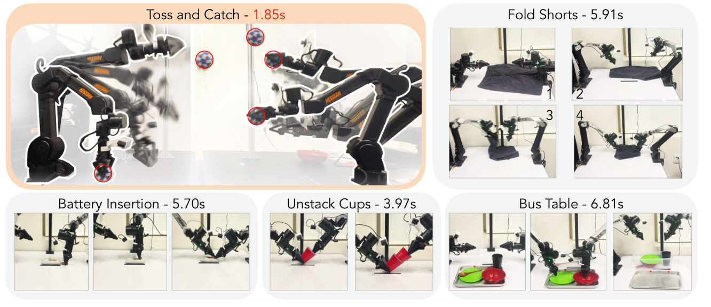
怎么读这张图
- 左下 Battery Insertion - 5.70s：running example，三帧对应放电池、顶弹簧、按到位。
- 左上 Toss and Catch - 1.85s：左臂抛球、右臂接球；红圈是球在几个时刻的位置。只有这个任务用 HESSIAN 臂。
- 其余三格：Fold Shorts 5.91 s、Unstack Cups 3.97 s、Bus Table 6.81 s，都用 ARX 臂。
flowchart LR I["Input
50 条握臂示范
每条不到 7 s"]:::example --> M["Flash ALOHA
涂黑手 → ACT
→ 混合 chunk 接缝"]:::win M --> O["Output
自主装电池
85% / 5.70 s"]:::example
Level 2 · Stages
5 个 stage
flowchart TD S1["1 · Hardware
ARX 双臂 + 剪刀柄 + 重力补偿"]:::win S1 --> S2["2 · Collect
50 条示范，50 Hz，每条不到 7 s"] S2 --> S3["3 · Mask
3 路图像里手的位置涂黑"]:::win S3 --> S4["4 · Policy
ACT：图像 + 关节 → 50 步关节目标"] S4 --> S5["5 · Smooth
相邻 chunk 重叠处 sigmoid 混合"]:::win S5 --> OUT["部署
85% / 5.70 s"]:::example click S1 href "#stage-1" click S2 href "#stage-2" click S3 href "#stage-3" click S4 href "#stage-4" click S5 href "#stage-5"
点击 stage 展开 Level 3 细节。绿框是这篇新加的部分。
Level 3 · Details
每个 stage 的细节
Stage 1 Hardware：能被人带着快跑的臂 现成 6-DoF 臂 → 人握着夹爪就能推动的双臂
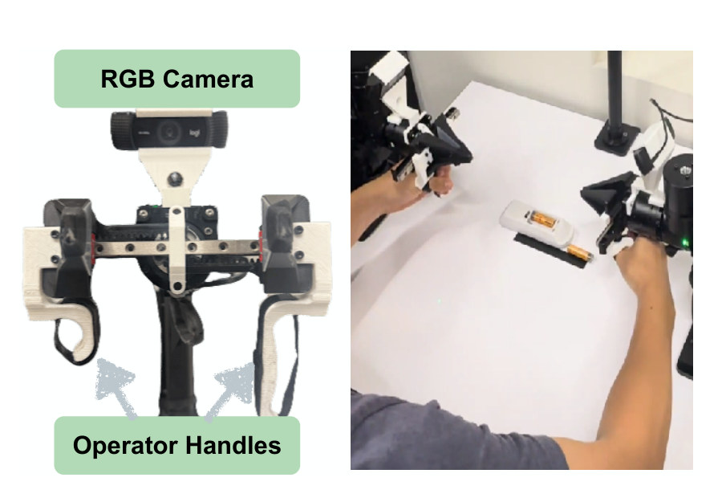
怎么读这张图
- 左 · RGB Camera：wrist 相机，朝向两指之间。
- 左 · Operator Handles：夹爪两指各一个白色手柄，小的套拇指，长的套其余四指，带可调绑带。
- 右：操作员握着两只夹爪装电池，画面里就是 running example 的遥控器和电池。
flowchart LR a["可反驱的臂
planetary 电机
关节摩擦低"] --> b["重力补偿
torque control
100 Hz"] b --> c["剪刀柄
拇指柄 + 四指柄"]:::win
- Why：臂的惯量和摩擦会让人觉得“拖不动”，快动作录不下来（§II）。
- 长柄的作用：四指柄负责向下、向侧面拉；手掌托住臂的底部负责向上加速。
- 可选：电机摩擦补偿、加大夹爪齿轮，进一步减轻疲劳（§II）。
- 相机：两个 wrist + 一个俯视，共 3 路 RGB，50 Hz。
Running example 在这一步
Battery Insertion 用两只 ARX 臂。换成 Toss & Catch 就得用 HESSIAN 臂：关节速度上限更高、摩擦更低。
Stage 2 Collect：握着臂做任务 操作员 + 任务 → 50 条（图像，关节位置）示范
flowchart LR a["握柄做任务
计时：不到 7 s"] --> b["50 Hz 记录
3 路 360×640 图像
关节位置和速度"] b --> c["回放检查
臂自己重跑这条轨迹"]
- Why：人坐在场景边上，同时有 3D 视觉、手柄上的力和接触的声音，没有遥操作的延迟。
- 轨迹来源：电机 encoder，激烈运动下也准，不需要位姿估计（对比见 E1）。
- 回放检查：只记位置可能丢掉“用力按”的信息；两条示范之间让臂回放刚录的轨迹，当场发现跟踪问题（§I）。
- 没有动作指令：不像遥操作有 leader 发出的指令，这里只有机器人自己的读数，所以动作就是“未来的关节位置”。
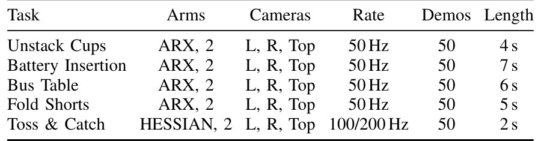
Running example 在这一步
Battery Insertion：ARX ×2，L/R/Top 三路相机，50 Hz，50 条，每条 7 s。Toss & Catch 只有 2 s，抛球臂 100 Hz、接球臂 200 Hz。
Stage 3 Mask：把手的位置涂黑 3 路图像 + 关节位置 → 看不到手的 3 路图像
- Why：采集时画面里有操作员的手，部署时没有，两边的图像分布不一样。
- 关键：手柄相对夹爪的位置是固定的，所以手在哪可以直接算出来，不需要检测。
- 部署时也涂：每一帧实时算、实时涂，训练和部署看到的画面一致。
flowchart TD a["关节位置 + 机器人描述文件"] --> b["FK
两臂夹爪各自的位姿"] b --> c["相机标定
换算到对方臂的坐标系"] c --> d["手的中心
手柄相对夹爪固定"] d --> e["wrist 相机
涂黑对面那只手的小方块"]:::win d --> f["top 相机
涂黑两个矩形：手和手臂"]:::win
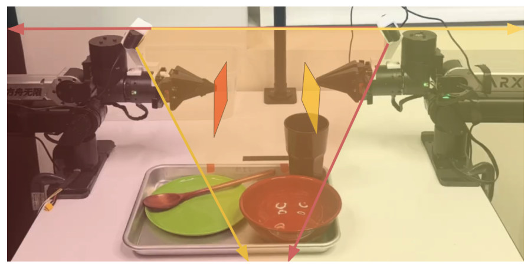
怎么读这张图
- 夹爪旁的小四边形（橙、黄）：要涂黑的方块，垂直于夹爪的指向，贴着手柄。
- 两个大三角（红线、黄线）：两台 wrist 相机的视野；方块落在对面相机的视野里，就投影成那路图像上的黑块。（caption 没有逐项解释，这是我的读法。）
Running example 在这一步
Battery Insertion 的起始帧：左 wrist 相机里右手的位置、右 wrist 相机里左手的位置、俯视图两侧，全是黑块（E2 的 Fig. 6 中间一列）。
Stage 4 Policy：ACT 预测未来的关节位置 涂黑的图像 + 当前关节位置 → 未来 50 步关节目标
flowchart LR a["输入
3 路 180×320 图像
当前关节位置"] --> b["ACT
ResNet-18
chunk 50"] b --> c["输出
未来 50 步关节位置
交给 PD controller"]
- Why action chunking：一次预测一段，减轻 behavior cloning 的误差累积。
- Action lookahead：每次换 chunk 时跳过新 chunk 的前几步，抵消推理和执行的延迟；跳几步是调出来的，论文没给数值。
- 配置（Table VI）：ACT 去掉 CVAE encoder，hidden 512 / feedforward 3200，encoder 4 层、decoder 7 层，8 heads，batch 256，lr 2×10⁻⁴，AdamW，200k steps。
- 训练（Appendix V）：图像从 360×640 降到 180×320，随机裁剪每边 95%；只用关节位置做条件，不用速度；单 GPU。
- 不绑定 ACT：作者认为别的 action chunk 策略也行，但没有实验。
Running example 在这一步
Battery Insertion 的策略每次输出 50 步，50 Hz 下是 1 s 的关节轨迹；整个任务约 5.70 s，要接好几段 chunk。
Stage 5 Smooth：混合相邻 chunk 的接缝 前后两段 chunk → 一条连续的指令
- Why：动作越快，相邻 chunk 的预测差得越多，接缝处的指令会突然跳一下，机器人就抖。
- How：后一段 chunk 提前几步预测出来，和前一段重叠；重叠的几步里，指令从前一段平滑过渡到后一段。
- 成本：不改训练，不增加推理次数，只是执行时多一次加权。
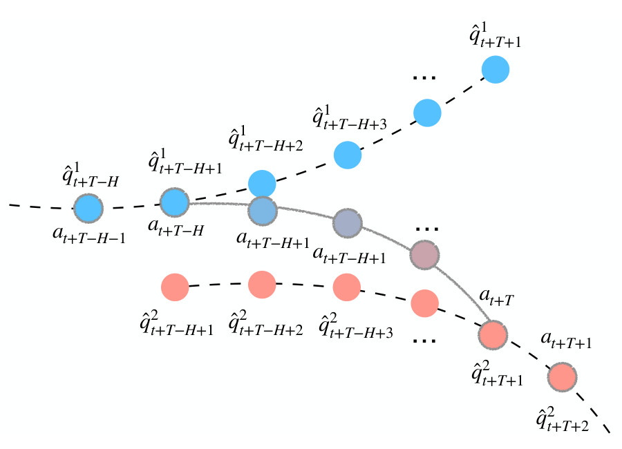
图里的符号
| 符号 | 白话 | 在例子里 |
|---|---|---|
| q̂¹（蓝点） | 前一段 chunk 给出的关节目标 | 装电池时正在执行的那 1 s 轨迹 |
| q̂²（红点） | 后一段 chunk 给出的关节目标 | 看到新画面后重新预测的 1 s 轨迹 |
| a（带灰边的点） | 最终发给电机的指令 | ARX 臂实际跟踪的关节位置 |
| T | 一段 chunk 有多少步 | 50 |
| H | 两段重叠（要混合）的步数，比 T 小 | 论文没给数值 |
| w | 后一段占的权重，0 到 1 | 重叠开始时接近 0，结束时接近 1 |
| σ | 权重从 0 升到 1 有多陡 | 论文没给数值 |
怎么读这张图
- 上面的蓝点：前一段的目标（q̂¹），继续往右上走。
- 下面的红点：后一段的目标（q̂²），在前一段还剩 H 步时预测出来，方向往右下；两串点的分叉就是接缝。
- 中间带灰边的点和灰线：实际指令（a）。重叠之前贴着蓝点，重叠里颜色由蓝变红，重叠之后贴着红点。
- 公式：指令 = (1 − 权重) × 前一段的目标 + 权重 × 后一段的目标（a = (1 − w)·q̂¹ + w·q̂²）；权重是重叠窗口里的 sigmoid，在窗口正中等于 0.5。
flowchart LR a["前一段 chunk
最后 H 步"] --> c["sigmoid 加权
权重 0 → 1"]:::win b["后一段 chunk
最前 H 步"] --> c c --> d["指令
连续的关节目标"]
Running example 在这一步
不混合时 Battery Insertion 的抓取和按压不准，75%；混合后 85%（E3）。调 H 和 σ 可以决定机器人多快转向新的 chunk。
Recap：例子覆盖了论文的哪些 idea
| 论文里的 idea | 例子里在哪体现 |
|---|---|
| 可反驱的臂 + 剪刀柄 + 重力补偿 | Stage 1：操作员握着 ARX 夹爪装电池 |
| 用 encoder 记轨迹，不做位姿估计 | Stage 2：50 Hz 的关节位置；E1 对比 handheld |
| 计时采集 + 回放检查 | Stage 2：每条不到 7 s，录完让臂重跑 |
| FK masking，训练和部署都做 | Stage 3：三路图像里手的位置是黑块；E2 |
| ACT 预测关节位置 + action lookahead | Stage 4：每次 50 步（1 s） |
| Test-time smoothing | Stage 5：75% → 85%；E3 |
| 慢数据提速行不通 | E4：puppeteering 策略提速后 15% / 30% |
| 高动态任务 | 例子换成 Toss & Catch：HESSIAN 臂，80% / 1.85 s；puppeteering 采不了 |
| 新手也学得快 | E5：7 个新手装电池，比 puppeteering 快 |
Results
快数据 + 两个处理，比慢数据提速又快又准
E1 为什么不用 handheld → E2 masking 有没有用 → E3 smoothing 有没有用 → E4 把 puppeteering 提速行不行 → E5 新手采集快不快。E2–E4 同时比成功率和用时。
E1高速下，位姿估计还准吗？§I · Appendix I, II
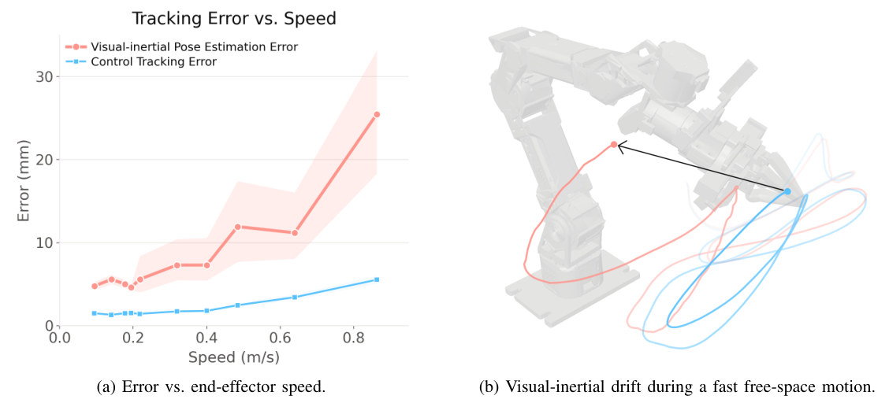
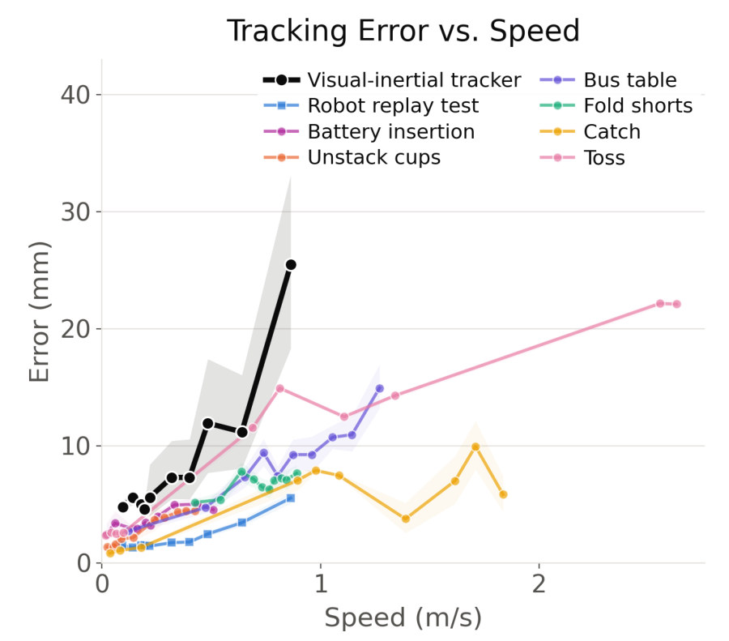
- 说明什么
- 速度越快，visual-inertial 估计越不准，而且始终比臂自己的跟踪误差大。约 0.86 m/s 时约 25 mm，对比约 5.5 mm（读图）；(b) 里漂移超过 10 cm。
- 在故事里
- 排除 handheld 路线：快动作要靠电机 encoder 记录。
- 指标
- 1 s 窗口内的平均末端位置误差，按末端速度分 10 个等量的 bin，阴影是 95% bootstrap CI。
- 怎么评测
- iPhone 15 Pro 跑 iPhUMI（ARKit，约 60 Hz），装在 Seeed reBot B601-RS 臂的腕上；encoder + FK 当 ground truth。
- 人手带着臂录 4 条轨迹，再以 0.25×、0.5×、0.75×、1× 回放：48 个 take，1,269 个窗口，速度最高 1.2 m/s。
- 场景加了有利于 tracker 的布置（花纹桌布、强光、杂物）；1× 回放平均要录 3–4 次才不丢 SLAM。
- 测的是一种 tracker，不是用 handheld 数据训出的策略。
E2涂黑手，比不处理和 inpainting 好吗？§V-C
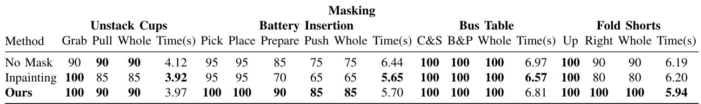
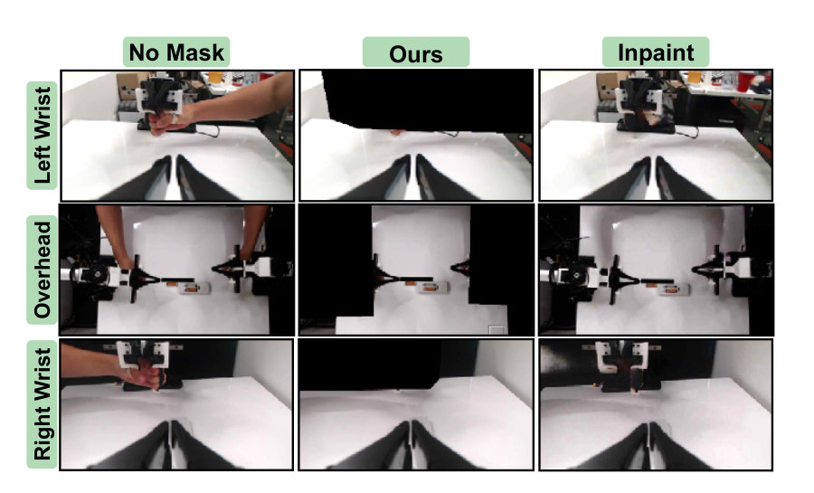
- 说明什么
- 成功率更高或持平，用时基本不变。Battery Insertion 85%，No Mask 75%，Inpainting 65%；Fold Shorts 100 / 90 / 80；Bus Table 三者都是 100。
- 在故事里
- 不涂也能用，涂了更好；inpainting 反而比不处理差，作者归因于桌面上残留的手臂影子和补图噪声（假设，未验证）。
- 指标
- 每个子步骤和整个任务（Whole）的成功率 %，加用时（s）。次数没写明；数值都是 5 的倍数，像是每格 20 次（推断）。
- 怎么评测
- 4 个任务（没有 Toss & Catch），每个 50 条示范，三种图像处理各训一个策略。
- Inpainting：预训练分割模型抠出手，再用预训练模型补成背景。
- 没说 smoothing 是否都开着，也没说用时是否只统计成功的那几次。
E3混合接缝，比不处理和 temporal ensembling 好吗？§V-D
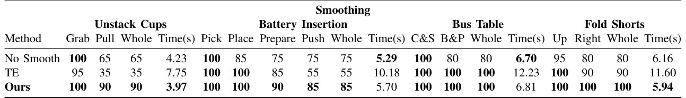
- 说明什么
- 成功率最高，速度不掉。Battery Insertion 85% / 5.70 s；No Smooth 75% / 5.29 s；TE 55% / 10.18 s。Unstack Cups 差得最多：90 / 65 / 35。
- 在故事里
- 高速下 chunk 接缝是真问题；TE 能修接缝，但每步都推理，把“快”丢了。
- 指标
- 同 E2。
- 怎么评测
- 同一批数据，执行时换三种处理：不处理、TE（每步预测一个 chunk，和历史 chunk 指数加权平均）、本文。
- TE 慢的原因是每步推理的计算时间。作者认为换更快的硬件 TE 仍会变差（被迫改道时它走平均路径），这是假设，没有实验。
- No Smooth 的用时略短（5.29 s 对 5.70 s），代价是抓取和按压不准。
E4把慢数据训出的策略直接提速，行不行？§V-E · Appendix III, IV
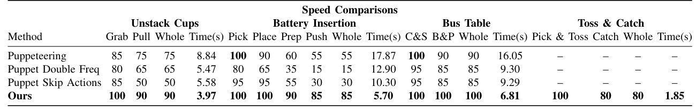
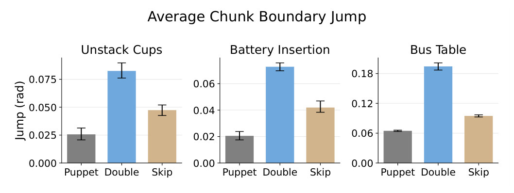
- 说明什么
- 提速后成功率大跌，而且还是比本文慢。Battery Insertion：55% → 15%（Double）/ 30%（Skip），用时 12.90 s / 10.30 s，本文 85% / 5.70 s。Toss & Catch 用 puppeteering 采不出数据，本文 80% / 1.85 s。
- 在故事里
- “先采慢数据再加速”这条近路走不通，所以要从采集就快。
- 指标
- 同 E2。Fig. 8：换 chunk 时前后两个指令在 12 个臂关节上的欧氏距离，每个条件 20 次 rollout 取平均，失败的也算。
- 怎么评测
- Puppeteering：ALOHA 2 leader 臂采 50 条 / 任务，50 Hz；示范长 12 s / 20 s / 18 s（本文 4 s / 7 s / 6 s）；同样的 ACT 配置。
- Double Freq：同样的 chunk 用 100 Hz 执行。Skip Actions：50 Hz 不变，每个 chunk 隔一步执行一步。两者都是每 0.5 s 换一次 chunk。
- 两边机器人不同（ALOHA 2 对 ARX），不是只换了采集方式。
- Puppeteering 这几行有没有加 smoothing，论文没说。
E5新手用这套硬件，采集快不快？§V-F
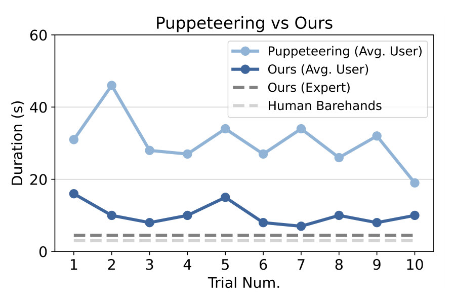
- 说明什么
- 新手也更快，最多快到 3 倍。10 次里本文约 7–16 s，puppeteering 约 19–46 s（读图）；熟练操作员约 4–5 s，接近徒手的约 3 s（读图）。
- 在故事里
- 快不是靠操作员的本事，而是接口本身：坐得近、看得直接、手上有力反馈。
- 指标
- 完成一次 Battery Insertion 的用时（s），按第几次试验取用户平均。
- 怎么评测
- 7 名几乎没有遥操作经验的志愿者；每套设备先熟悉 3 分钟，看一遍专家示范和提示，再计时 10 次。
- 没说两套设备的先后顺序，也没报告成功率和方差。
Limits
局限和开放问题
- Mask 太保守（作者）：手附近的有用画面也被涂掉了；想做自适应 masking。
- 只有视觉和关节（作者）：没有触觉，接触很多的灵巧操作学不了。
- 泛化没测：每个任务一个策略，物体只沿 15 cm 胶带移动（短裤最多转 30°）。
- 关键超参没给：重叠步数 H、陡度 σ、lookahead 跳几步都没有数值，也没有消融。
- 对比不完全对等：puppeteering 用的是另一台机器人；Table I、II 没写试验次数。
For Robot learning in simulation
对我们有什么用
- SO-101（
Real-Robotics/）：我们的 leader-follower 采集就是这里的 puppeteering 一栏；想要快示范得先确认臂能不能被反驱（论文靠 planetary 电机，SO-101 行不行要自己试）。 - Runtime 里的 chunk 策略：test-time smoothing 不改训练，只在执行时混合两段 chunk，可以直接加在 LIBERO / RoboTwin 上跑的 action-chunk 策略后面，看接缝抖动。
- FK masking 的思路：已知运动学的东西直接算出来遮掉，比生成式补图更稳；real-to-sim 里处理“画面里的机器人或手”时可以先试这条。